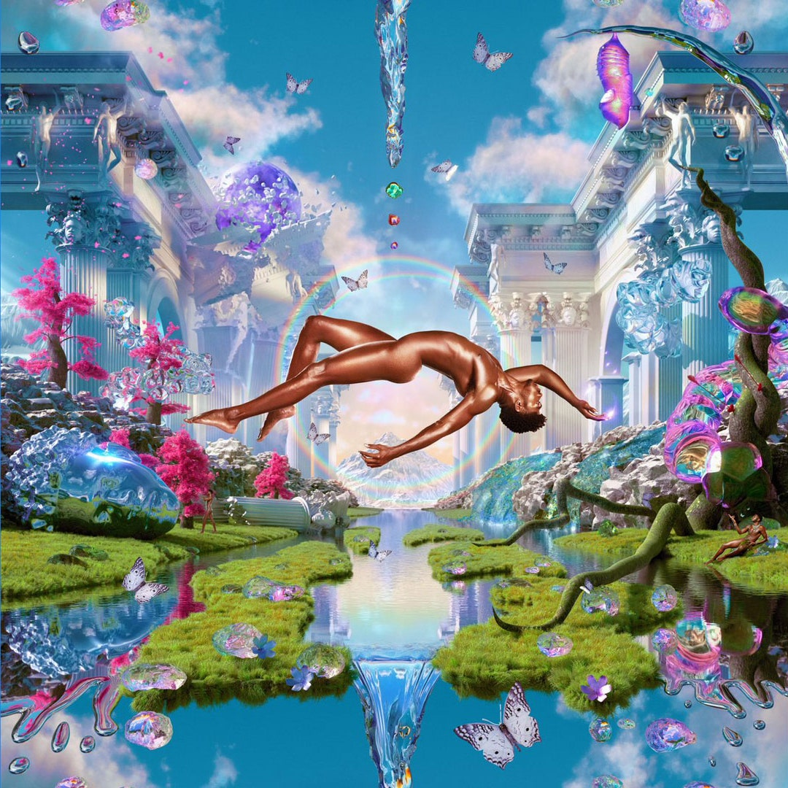

Pop

Album cover art by Charlotte Rutherford
MONTERO
by Lil Nas X
His first album has some of my favorite songs on it! They range from pop, to rap, to even some slower, sentimental songs. Something for everyone!
Notable songs from the album:
- Scoop ft. Doja Cat
- Tales of Dominica
- Am I Dreaming ft. Miley Cyrus
Hip Hop
Album cover photographed by Rolex
No Love
by Summer Walker ft. SZA
This song is about finding your worth after giving all you had in a bad relationship, and then using it to your advantage. I think the beat and rhythm of this song make it so addicting. I also love Summer Walker and SZA, so together any song they make is going to be one of my favorites.